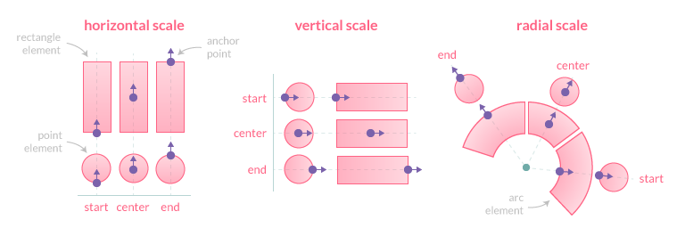
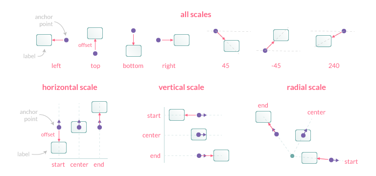

Positioning
Anchoring
An anchor point is defined by an orientation vector and a position on the data element. The orientation depends on the scale type (vertical, horizontal or radial). The position is calculated based on the anchor option and the orientation vector.
Supported values for anchor:
'center'(default): element center'start': lowest element boundary'end': highest element boundary

Clamping
The clamp option, when true, enforces the anchor position to be calculated based on the visible geometry of the associated element (i.e. part inside the chart area).

If the element is fully hidden (i.e. entirely outside the chart area), anchor points will not be adjusted and thus will also be outside the viewport.
Alignment and Offset
The align option defines the position of the label relative to the anchor point position and orientation. Its value can be expressed either by a number representing the clockwise angle (in degree) or by one of the following string presets:
'center'(default): the label is centered on the anchor point'start': the label is positioned before the anchor point, following the same direction'end': the label is positioned after the anchor point, following the same direction'right': the label is positioned to the right of the anchor point (0°)'bottom': the label is positioned to the bottom of the anchor point (90°)'left': the label is positioned to the left of the anchor point (180°)'top': the label is positioned to the top of the anchor point (270°)
The offset represents the distance (in pixels) to pull the label away from the anchor point. This option is not applicable when align is 'center'. Also note that if align is 'start', the label is moved in the opposite direction. The default value is 4.

Rotation
This option controls the clockwise rotation angle (in degrees) of the label, the rotation center point being the label center. The default value is 0 (no rotation).
Visibility
The display option controls the visibility of labels and accepts the following values:
true(default): the label is drawnfalse: the label is hidden'auto': the label is hidden if it overlap with another label
This option is scriptable, so it's possible to show/hide specific labels:
display: function(context) {
return context.dataIndex % 2; // display labels with an odd index
}
Overlap
The display: 'auto' option can be used to prevent overlapping labels, based on the following rules when two labels overlap:
- if both labels are
display: true, they will be drawn overlapping - if both labels are
display: 'auto', the one with the highest data index will be hidden. If labels are at the same data index, the one with the highest dataset index will be hidden - if one label is
display: trueand the other one isdisplay: 'auto', the one with'auto'will be hidden (whatever the data/dataset indices)
Labels with display: false don't contribute to the overlap detection.
Clipping
When the clip option is true, the part of the label which is outside the chart area will be masked (see CanvasRenderingContext2D.clip())
← Labels Formatting →